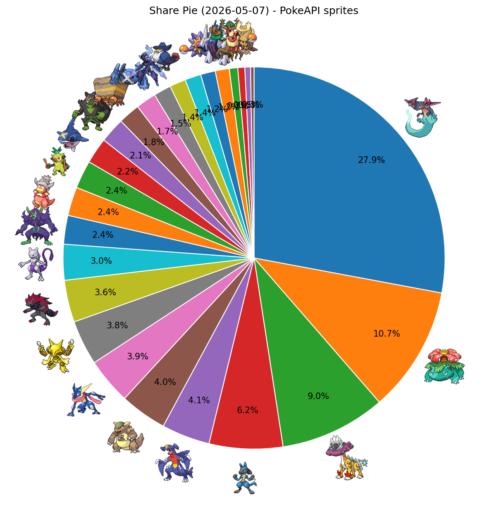
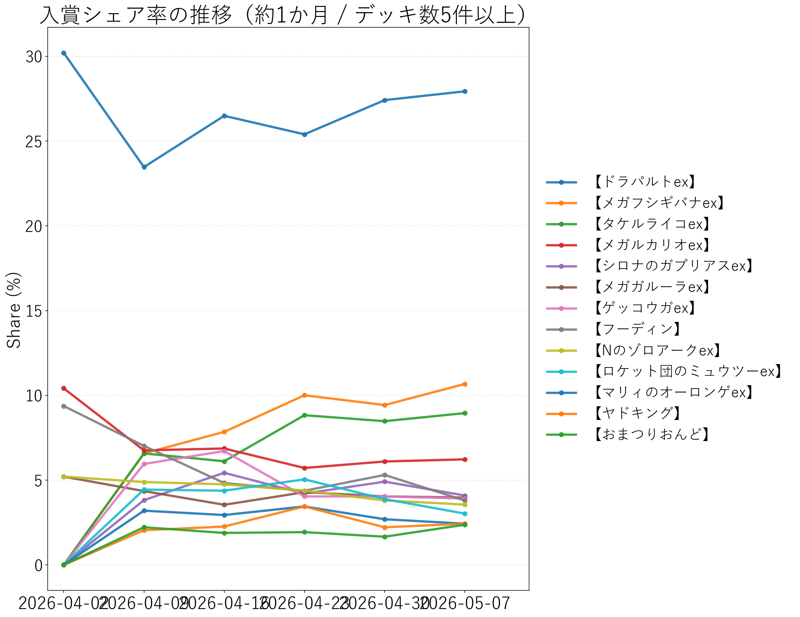

↔ 横スクロール
| 順位 | デッキタイプ | 入賞数 | シェア |
|---|---|---|---|
| 1 | 【ドラパルトex】 | 471 | 27.94% |
| 2 | 【メガフシギバナex】 | 180 | 10.68% |
| 3 | 【タケルライコex】 | 151 | 8.96% |
| 4 | 【メガルカリオex】 | 105 | 6.23% |
| 5 | 【シロナのガブリアスex】 | 69 | 4.09% |
| 6 | 【メガガルーラex】 | 67 | 3.97% |
| 7 | 【ゲッコウガex】 | 66 | 3.91% |
| 8 | 【フーディン】 | 64 | 3.80% |
| 9 | 【Nのゾロアークex】 | 60 | 3.56% |
| 10 | 【ロケット団のミュウツーex】 | 51 | 3.02% |
| 11 | 【マリィのオーロンゲex】 | 41 | 2.43% |
| 12 | 【ヤドキング】 | 41 | 2.43% |
| 13 | 【おまつりおんど】 | 40 | 2.37% |
| 14 | 【メガサメハダーex】 | 37 | 2.19% |
| 15 | 【イイネイヌ】 | 36 | 2.14% |
| 16 | 【イワパレス】 | 31 | 1.84% |
| 17 | 【ダイゴのメタグロスex】 | 29 | 1.72% |
| 18 | 【ソウブレイズex】 | 25 | 1.48% |
| 19 | 【ロケット団のドンカラス】 | 23 | 1.36% |
| 20 | 【メガスターミーex】 | 21 | 1.25% |
| 21 | 【ブリジュラスex】 | 20 | 1.19% |
| 22 | 【ホップのオーロット】 | 12 | 0.71% |
| 23 | 【ブースターex】 | 10 | 0.59% |
| 24 | 【テラスタルバレット】 | 8 | 0.47% |
| 25 | その他 | 28 | 1.66% |

PokeAPIアイコン付きシェア円グラフ

入賞シェア率の推移